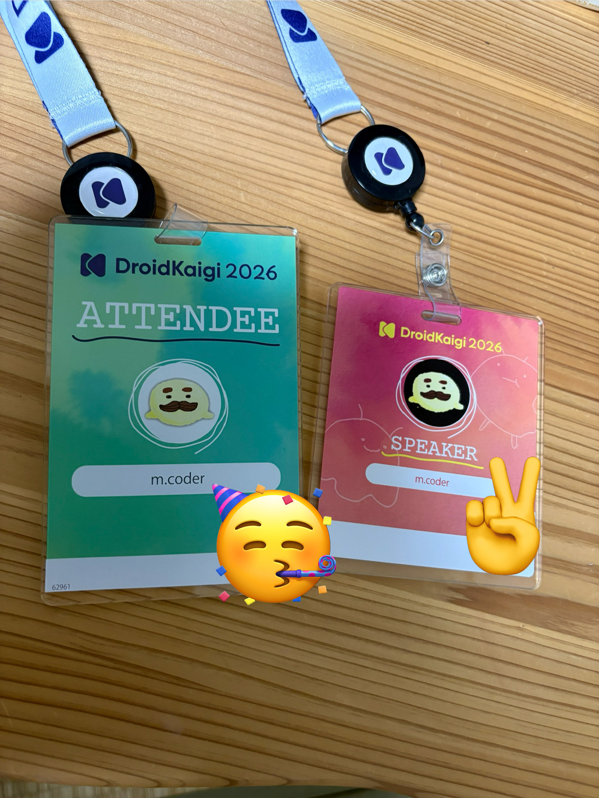

DroidKaigi2026 に登壇しました
DroidKaigi 2026
DroidKaigi 2026
9/1(火)-9/3(木)にベルサール渋谷ガーデンにて開催された DroidKaigi 2026 にオフラインで参加してきました。
今回は DroidKaigi 2023 以来、3年ぶりに なんとかする力 〜Androidエンジニアからマネージャー、さらにその先へ？〜 というタイトルで登壇も行いました。
登壇の経緯
今回の登壇については、自身から応募したわけではなく、運営の方からお声かけいただいたのがきっかけでした。
「女性エンジニア、かつマネージャー」という立場で活動しているエンジニアはまだまだ多くありません。その中で、記事での発信を行なっていたり、ボランティアスタッフなどでも DroidKaigi に携わらせてもらった経験もあり、わたしに声をかけていただいたようでした。
「マネジメントに関して自分に喋れることあるんか！？」と少し悩んだのですが、せっかくの機会ですし引き受けることにしました。
スライド作成
しばらく登壇を行なっていなかったことせいもあってか、めちゃくちゃ難航しました。「そうだ、40分のセッションて準備めちゃくちゃ大変なんだった…」と3年前を思い返して遠い目になっていました。
かつ、今回の登壇はコードが一切登場しません。「技術調査を行なって判明した客観的事実をアウトプットする」、「サンプルコードをみんなに読んでもらいながら説明する」、という流れではなく、自身の経験などをもとに40分ぶんのスライドを作り、自分の言葉で全てを語らなくてはいけません。基本的に自己肯定感が高くない自分は 「いや何様〜〜〜〜〜」「偉そうすぎでは？？」 と思いながらマネジメント論？をぶつ準備を進めておりました。
結果として、35分程度の分量のスライドを作成し、当日は思ったより口が滑らかに動いてしまったせいで32-33分程度の発表となりました。発表の時間調整難しい。
準備にAIどれぐらい使った？
昨今、登壇スライド作成にもAIを活用する人が多いと思います。
今回自分もスライドの見た目を整えるのには大いに活用させていただきましたが、マネジメントを語るときに「AIっぽい」語り口が入ってしまうとおそらく説得力が無くなると思い、発表内容については99%自分の手で書きました。
内容については最初のテーマ出しや、行き詰まった時の壁打ちに利用した程度です。
ちなみに自分でぽちぽちレイアウトを整えるのが嫌だったので、 Slidev を採用して文章は Markdown で書けるようにし、見た目部分は Claude Code に整えてもらう戦法を採用しました。
見た目を整えるのが楽しくなってしまって、そっちに時間を溶かしたのがやや反省点です。
発表を終えて
今回、 Conference Day 1日目の一発目という大変緊張感のある時間帯の発表でした。ただ個人的には、一発目に喋ってあとは心置きなくカンファレンスを楽しめるのでありがたかったです。
DroidKaigi では今までに4回ほど登壇させていただいたのですが、有難いことに、おそらく今までで一番反響が大きかったのではないかと思います。
会場でも「セッション見ました」と声をかけていただくことが多く、中には弊社のスポンサーブースに来て感想を言ってくださった方もいたようでした（ちょうどそのとき不在でお会いできず…申し訳ない）
「共感した」「刺さった」と言ってくださる方が何人もいて、嬉し恥ずかしの登壇となりました。お声かけいただいた皆様、ありがとうございます。
ここからは登壇以外のお話です。
スポンサーブース
今年も フラー株式会社 はゴールドスポンサーとして参加しました。去年までは紙のおみくじを引いてもらうというスタイルだったのですが、今年は「おみくじアプリ」を若手中心の有志が開発してくれました。
＼DroidKaigi 2026 ／
— フラー株式会社 (@fuller_inc) September 2, 2026
フラーのブースでは「あんどろいどおみくじ」が引けます✨
大吉が当たった方にはグッズを、それ以外でも「幸運が舞い込むハッピーターン」をお渡ししています🌅
会場にいる方はぜひフラーのブースにお立ち寄りください🙋🙋♀️ pic.twitter.com/tr26DPTWcA
今年はわたしは運営側には極力関与せず、他の人たちに委譲していきました。少しバタついたりもあったようですが、来年以降、知見をもつメンバーが増えて運営もスムーズになっていくのではないかなと思っています。
参加者として
実は登壇のお声かけをいただく前に、すでに「全力応援チケット」を購入しており、スピーカーの名札と全力応援チケットの2枚をいただきました。通常の名札と違ってどちらもアクリル製で、ちょっと高級感があります。

ちょっといい名札を2枚も持ってるぜ！というのが密かなドヤりポイントだったのですが、 2枚とも下げているとカチャカチャうるさい という罠があり、そっと手で押さえながら移動してました。
この名札を利用した入場ゲートが配置されていたのは、今回のカンファレンスの驚きポイントの1つでした。「なんかオシャレなオフィス行くときに通すやつやん！」となってテンションが上がりました。
DroidKaigi 2026 Conference Day1 受付開始しました！入場の際はゲートにDoorkeeperのチケットや名札のQRコードをかざしてお入りください！
— DroidKaigi (@DroidKaigi) September 2, 2026
10:30からWelcome Talkが始まります！まだの方はお気をつけてお越しください！#DroidKaigi pic.twitter.com/Mvysf8TFB7
ブースや登壇などでわたわたしたせいもあり、あまりセッションはたくさんは見れなかったのですが、その中でも あなたのANRはどこから？ — 発生する仕組みを診断し、症状別に処方する や UI仕様を「見えるもの」にする 〜 Compose Screenshot Testing とギャラリーで支える、AIエージェント時代のAndroid UI開発 〜 などは興味深く拝見しました。 ANR 後回しにしがち、わかる。
Screenshot Testing は弊社でも導入しているものの、差分をスクショ撮って終わり、みたいになっている感じもあり、ちゃんと仕組み化して開発効率化するところまで推進できていて素晴らしいなと思いました。
企画で嬉しかったところとして、近年導入されたドリンクコーナーに加え、今年は駄菓子コーナーが設置されていてテンションが上がりました。夏のお祭りという雰囲気があって良かったです。
おわりに
個人的な反省点としては、なんだか全体的にバタバタしてしまい純粋にセッションを楽しむ時間が少なくなってしまったことです。
ただ、それを上回るぐらい色々な人に声をかけていただいて、お久しぶりな方などにもお会いできたので、嬉しい限りでした。
改めて、登壇の機会をいただいた運営の皆様、準備に勤しまれたであろうボランティアスタッフの皆様、登壇を見て感想いただいた皆様、会場で声をかけてくださった皆様、本当にありがとうございました。